import numpy as np
import pandas as pd
import matplotlib.pyplot as plt
import seaborn as sns
from sklearn.linear_model import LinearRegression Statistique descriptive univariée
- Importations de bibliothèques
iris=pd.read_csv('iris.csv')En appelant le nom du data frame, on peut voir à quoi ressemblent les données contenues dans le fichier.
iris| Sepal_Length | Sepal_Width | Petal_Length | Petal_Width | Class | |
|---|---|---|---|---|---|
| 0 | 5.1 | 3.5 | 1.4 | 0.2 | setosa |
| 1 | 4.9 | 3.0 | 1.4 | 0.2 | setosa |
| 2 | 4.7 | 3.2 | 1.3 | 0.2 | setosa |
| 3 | 4.6 | 3.1 | 1.5 | 0.2 | setosa |
| 4 | 5.0 | 3.6 | 1.4 | 0.2 | setosa |
| ... | ... | ... | ... | ... | ... |
| 145 | 6.7 | 3.0 | 5.2 | 2.3 | virginica |
| 146 | 6.3 | 2.5 | 5.0 | 1.9 | virginica |
| 147 | 6.5 | 3.0 | 5.2 | 2.0 | virginica |
| 148 | 6.2 | 3.4 | 5.4 | 2.3 | virginica |
| 149 | 5.9 | 3.0 | 5.1 | 1.8 | virginica |
150 rows × 5 columns
1 - Quelles quantités sont mesurées ? Pour combien d’individus ? Combien y a-t-il de variétés d’iris dans ce jeu de données ? Afficher les 10 premières lignes puis les 10 dernières.
iris.shape(150, 5)Il y a 5 variables (colonnes) et 150 individus (lignes).
iris.columnsIndex(['Sepal_Length', 'Sepal_Width', 'Petal_Length', 'Petal_Width', 'Class'], dtype='object')Il y a 4 valeurs quantitatives mesurées : longueur et largeur des pétales et des sépales (ce sont les noms des colonnes), pour 150 individus (nombre de lignes) plus une variable qualitative correspondant à la variété.
Pour compter le nombre de variétés
variete = iris.Classnp.unique(variete)array(['setosa', 'versicolor', 'virginica'], dtype=object)On obtient les valeurs des 3 variétés : setosa, versicolor et virginica. On constate qu’il y a 50 individus de chaque.
Affichage des premières et dernières lignes
iris.head(10)| Sepal_Length | Sepal_Width | Petal_Length | Petal_Width | Class | |
|---|---|---|---|---|---|
| 0 | 5.1 | 3.5 | 1.4 | 0.2 | setosa |
| 1 | 4.9 | 3.0 | 1.4 | 0.2 | setosa |
| 2 | 4.7 | 3.2 | 1.3 | 0.2 | setosa |
| 3 | 4.6 | 3.1 | 1.5 | 0.2 | setosa |
| 4 | 5.0 | 3.6 | 1.4 | 0.2 | setosa |
| 5 | 5.4 | 3.9 | 1.7 | 0.4 | setosa |
| 6 | 4.6 | 3.4 | 1.4 | 0.3 | setosa |
| 7 | 5.0 | 3.4 | 1.5 | 0.2 | setosa |
| 8 | 4.4 | 2.9 | 1.4 | 0.2 | setosa |
| 9 | 4.9 | 3.1 | 1.5 | 0.1 | setosa |
iris.tail(10)| Sepal_Length | Sepal_Width | Petal_Length | Petal_Width | Class | |
|---|---|---|---|---|---|
| 140 | 6.7 | 3.1 | 5.6 | 2.4 | virginica |
| 141 | 6.9 | 3.1 | 5.1 | 2.3 | virginica |
| 142 | 5.8 | 2.7 | 5.1 | 1.9 | virginica |
| 143 | 6.8 | 3.2 | 5.9 | 2.3 | virginica |
| 144 | 6.7 | 3.3 | 5.7 | 2.5 | virginica |
| 145 | 6.7 | 3.0 | 5.2 | 2.3 | virginica |
| 146 | 6.3 | 2.5 | 5.0 | 1.9 | virginica |
| 147 | 6.5 | 3.0 | 5.2 | 2.0 | virginica |
| 148 | 6.2 | 3.4 | 5.4 | 2.3 | virginica |
| 149 | 5.9 | 3.0 | 5.1 | 1.8 | virginica |
2 - Extraire le vecteur des largeurs de sépales (Sepal_Width)
sw1 = iris.Sepal_Width
sw10 3.5
1 3.0
2 3.2
3 3.1
4 3.6
...
145 3.0
146 2.5
147 3.0
148 3.4
149 3.0
Name: Sepal_Width, Length: 150, dtype: float64ou bien
sw2 = iris['Sepal_Width']
sw20 3.5
1 3.0
2 3.2
3 3.1
4 3.6
...
145 3.0
146 2.5
147 3.0
148 3.4
149 3.0
Name: Sepal_Width, Length: 150, dtype: float643 - Extraire le vecteur des largeurs de pétales (Petal_Width) pour la variété setosa
iris.Petal_Width[iris.Class=='setosa']0 0.2
1 0.2
2 0.2
3 0.2
4 0.2
5 0.4
6 0.3
7 0.2
8 0.2
9 0.1
10 0.2
11 0.2
12 0.1
13 0.1
14 0.2
15 0.4
16 0.4
17 0.3
18 0.3
19 0.3
20 0.2
21 0.4
22 0.2
23 0.5
24 0.2
25 0.2
26 0.4
27 0.2
28 0.2
29 0.2
30 0.2
31 0.4
32 0.1
33 0.2
34 0.1
35 0.2
36 0.2
37 0.1
38 0.2
39 0.2
40 0.3
41 0.3
42 0.2
43 0.6
44 0.4
45 0.3
46 0.2
47 0.2
48 0.2
49 0.2
Name: Petal_Width, dtype: float64Mesures de tendance et de dispersion
1 utilisez la fonction describe pour obtenir le résumé quantitatif du jeu de données.
iris.describe()| Sepal_Length | Sepal_Width | Petal_Length | Petal_Width | |
|---|---|---|---|---|
| count | 150.000000 | 150.000000 | 150.000000 | 150.000000 |
| mean | 5.843333 | 3.054000 | 3.758667 | 1.198667 |
| std | 0.828066 | 0.433594 | 1.764420 | 0.763161 |
| min | 4.300000 | 2.000000 | 1.000000 | 0.100000 |
| 25% | 5.100000 | 2.800000 | 1.600000 | 0.300000 |
| 50% | 5.800000 | 3.000000 | 4.350000 | 1.300000 |
| 75% | 6.400000 | 3.300000 | 5.100000 | 1.800000 |
| max | 7.900000 | 4.400000 | 6.900000 | 2.500000 |
2 - Comparez les mesures pour le jeu de données globales et celles obtenues par variété.
iris[iris['Class']=='setosa'].describe()| Sepal_Length | Sepal_Width | Petal_Length | Petal_Width | |
|---|---|---|---|---|
| count | 50.00000 | 50.000000 | 50.000000 | 50.00000 |
| mean | 5.00600 | 3.418000 | 1.464000 | 0.24400 |
| std | 0.35249 | 0.381024 | 0.173511 | 0.10721 |
| min | 4.30000 | 2.300000 | 1.000000 | 0.10000 |
| 25% | 4.80000 | 3.125000 | 1.400000 | 0.20000 |
| 50% | 5.00000 | 3.400000 | 1.500000 | 0.20000 |
| 75% | 5.20000 | 3.675000 | 1.575000 | 0.30000 |
| max | 5.80000 | 4.400000 | 1.900000 | 0.60000 |
iris[iris['Class']=='versicolor'].describe()| Sepal_Length | Sepal_Width | Petal_Length | Petal_Width | |
|---|---|---|---|---|
| count | 50.000000 | 50.000000 | 50.000000 | 50.000000 |
| mean | 5.936000 | 2.770000 | 4.260000 | 1.326000 |
| std | 0.516171 | 0.313798 | 0.469911 | 0.197753 |
| min | 4.900000 | 2.000000 | 3.000000 | 1.000000 |
| 25% | 5.600000 | 2.525000 | 4.000000 | 1.200000 |
| 50% | 5.900000 | 2.800000 | 4.350000 | 1.300000 |
| 75% | 6.300000 | 3.000000 | 4.600000 | 1.500000 |
| max | 7.000000 | 3.400000 | 5.100000 | 1.800000 |
iris[iris['Class']=='virginica'].describe()| Sepal_Length | Sepal_Width | Petal_Length | Petal_Width | |
|---|---|---|---|---|
| count | 50.00000 | 50.000000 | 50.000000 | 50.00000 |
| mean | 6.58800 | 2.974000 | 5.552000 | 2.02600 |
| std | 0.63588 | 0.322497 | 0.551895 | 0.27465 |
| min | 4.90000 | 2.200000 | 4.500000 | 1.40000 |
| 25% | 6.22500 | 2.800000 | 5.100000 | 1.80000 |
| 50% | 6.50000 | 3.000000 | 5.550000 | 2.00000 |
| 75% | 6.90000 | 3.175000 | 5.875000 | 2.30000 |
| max | 7.90000 | 3.800000 | 6.900000 | 2.50000 |
3 - Visualisation des données
1 - Tracer la fonction de répartition empirique de la largeur des pétales pour les trois variétés du jeu de données iris, sur trois graphes différents.
sns.ecdfplot(data=iris[iris.Class=="setosa"], x='Petal_Width')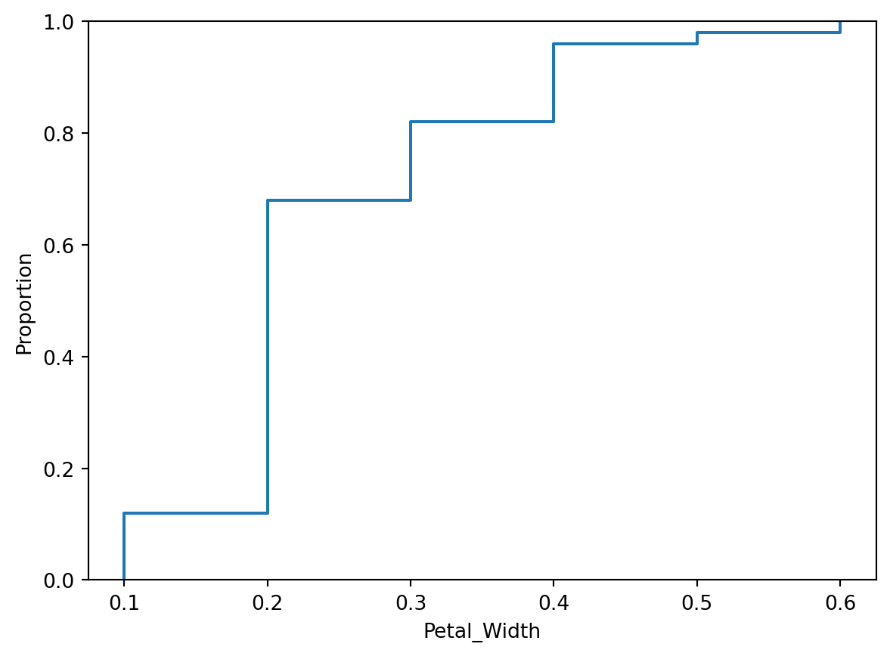
sns.ecdfplot(data=iris[iris.Class=="virginica"], x='Petal_Width')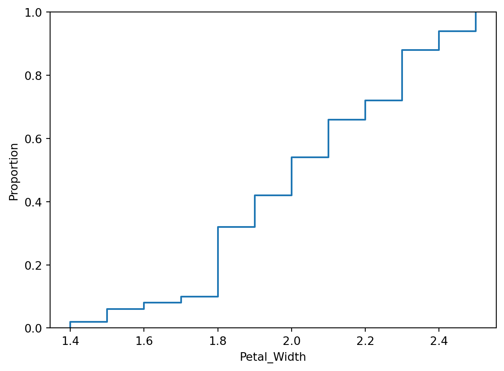
sns.ecdfplot(data=iris[iris.Class=="versicolor"], x='Petal_Width')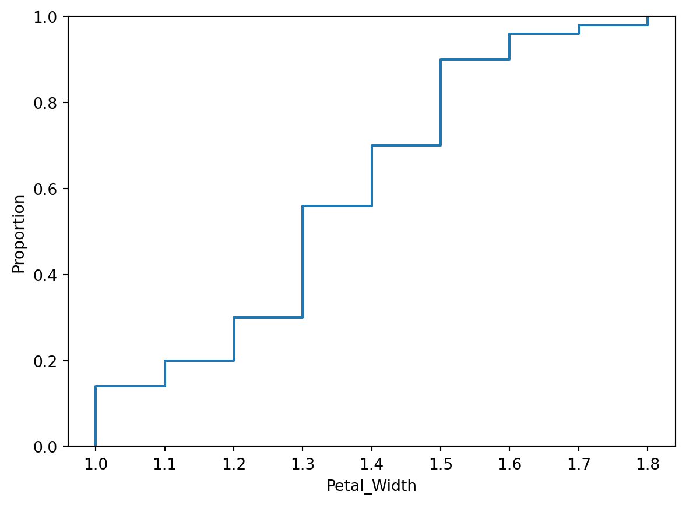
2 - Tracer la fonction de répartition empirique de la largeur des pétales pour les trois variétés du jeu de données iris, sur le même graphe, avec l’option hue.
sns.ecdfplot(data=iris, x='Petal_Width', hue="Class")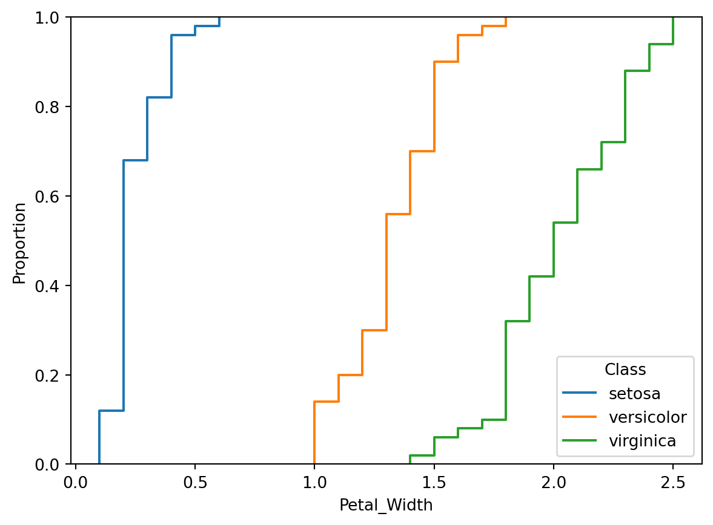
3 - Pour le jeu de données iris, tracez l’histogramme des longueurs de pétales pour tout le jeu de données.
pl = iris.Petal_Length
fig, ax=plt.subplots()
ax.hist(pl,edgecolor='k')
fig.suptitle('Histogramme des longueurs des pétales')Text(0.5, 0.98, 'Histogramme des longueurs des pétales')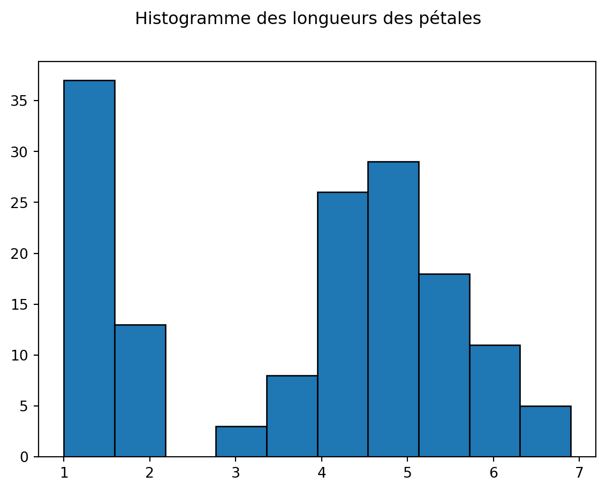
fig, ax=plt.subplots()
sns.histplot(data=iris, x='Petal_Length')
fig.suptitle('Histogramme des longueurs des pétales')Text(0.5, 0.98, 'Histogramme des longueurs des pétales')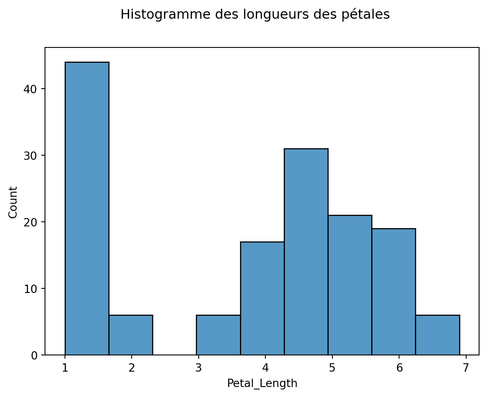
4 - Jouer avec le nombre de classes avec l’option bins.
fig, ax=plt.subplots()
ax.hist(pl,bins=20,edgecolor='k')
fig.suptitle('Histogramme des longueurs des pétales')Text(0.5, 0.98, 'Histogramme des longueurs des pétales')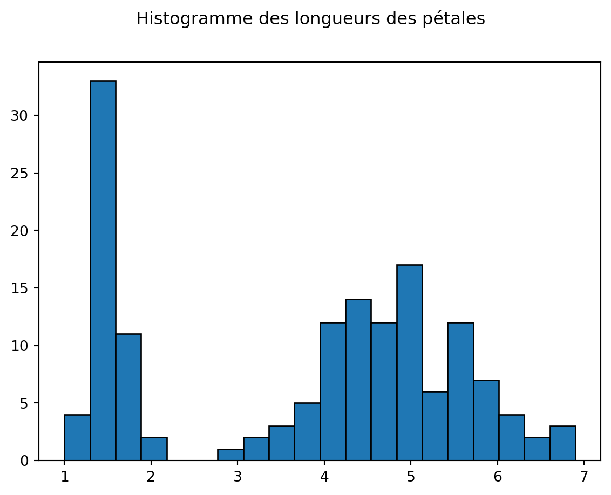
fig, ax=plt.subplots()
sns.histplot(data=iris, x='Petal_Length', bins=20)
fig.suptitle('Histogramme des longueurs des pétales')Text(0.5, 0.98, 'Histogramme des longueurs des pétales')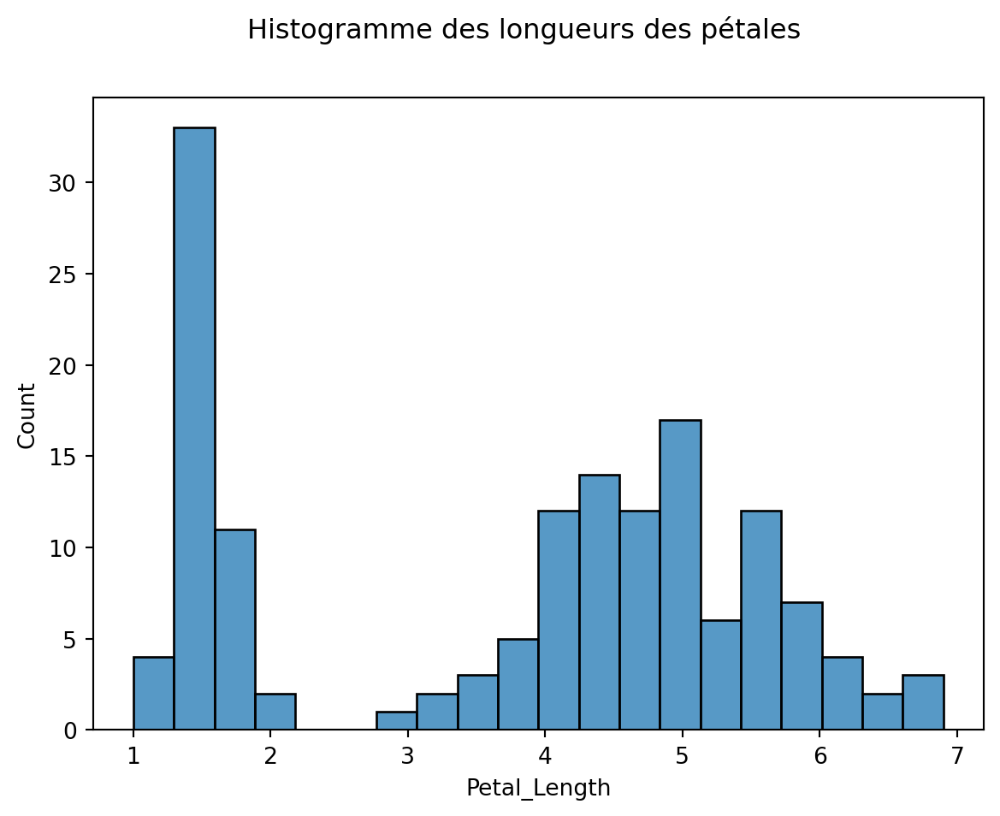
5 - Pour le jeu de données iris, tracez l’histogramme des longueurs de pétales pour tout le jeu de données en colorant les barres en fonction de l’espèce (option sns hue).
fig, ax=plt.subplots()
sns.histplot(data=iris, x='Petal_Length', hue='Class')
fig.suptitle('Histogramme des longueurs des pétales')Text(0.5, 0.98, 'Histogramme des longueurs des pétales')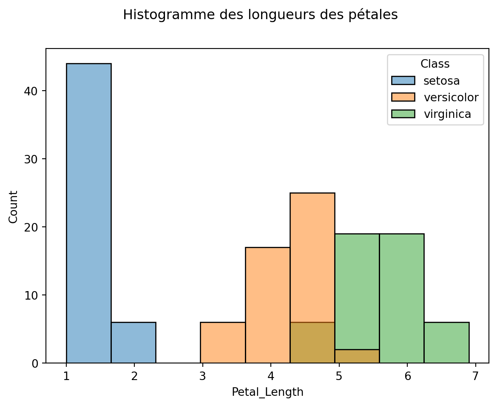
6 - Pour le jeu de données iris, tracer les boîtes à moustache des longueurs de pétales pour chacune des trois variétés.
pl1 = pl[iris.Class=='setosa']
pl2 = pl[iris.Class=='versicolor']
pl3 = pl[iris.Class=='virginica']fig, ax=plt.subplots()
ax.boxplot([pl1,pl2,pl3])
fig.suptitle('Boxplot des longueurs des pétales')
plt.xticks([1, 2, 3], ["setosa", "versicolor", "virginica"])([<matplotlib.axis.XTick at 0x1c2cbeda7b0>,
<matplotlib.axis.XTick at 0x1c2cbb0a9c0>,
<matplotlib.axis.XTick at 0x1c2cbe3f770>],
[Text(1, 0, 'setosa'), Text(2, 0, 'versicolor'), Text(3, 0, 'virginica')])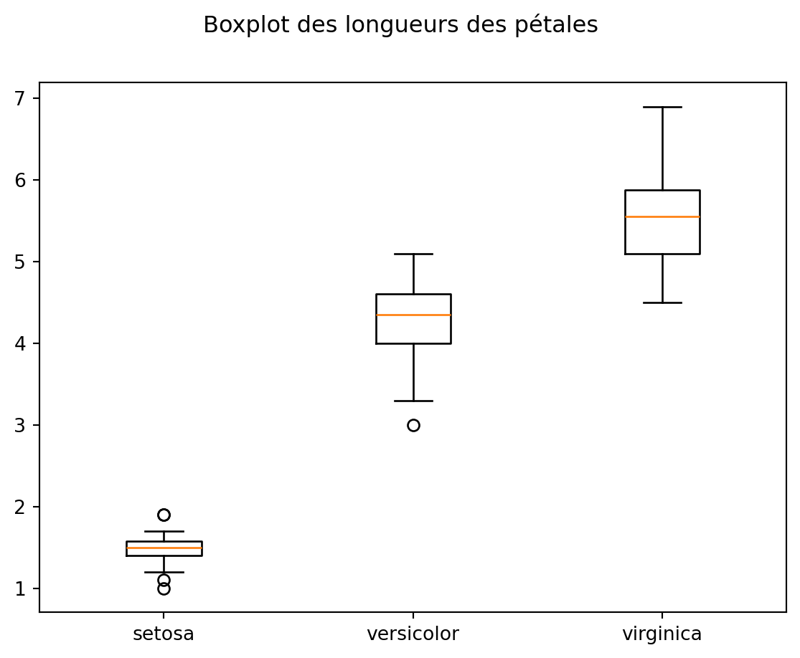
fig, ax=plt.subplots()
sns.boxplot(data=iris, x= 'Class', y='Petal_Length')
fig.suptitle('Boxplot des longueurs des pétales')Text(0.5, 0.98, 'Boxplot des longueurs des pétales')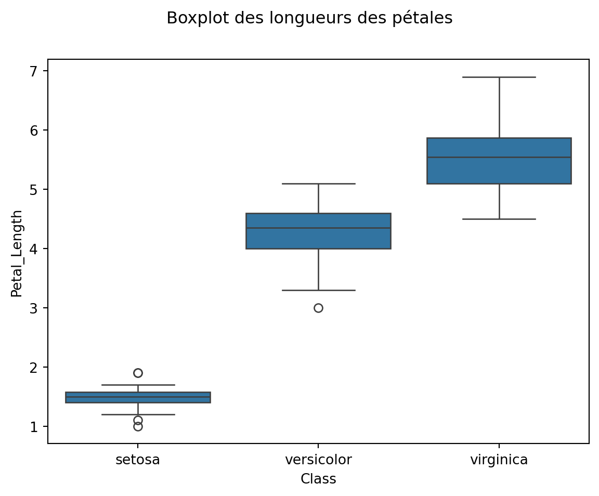